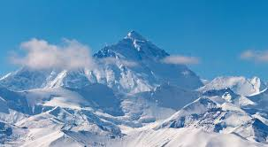
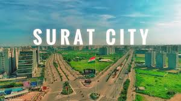

The Mughal emperor Shah Jahan built the Taj Mahal as a mausoleum for his favorite wife, Mumtaz Mahal,
with construction starting in 1632 and completing around 1653. While Shah Jahan commissioned the building,
the chief architect and designer of the Taj Mahal was Ustad Ahmad Lahouri.

The Himalayas are not in a single country; they stretch across Afghanistan, China, India, Nepal, Pakistan, and Bhutan. Parts of the range are also considered to be in or around Myanmar. The specific portion of the Himalayas within each country varies, with India possessing the largest share of the mountain range.

Surat is most famous for its global dominance in the diamond cutting and polishing industry, where it handles approximately 90% of the world's diamonds, and its robust textile sector, known for producing synthetic fabrics, silk, and a wide variety of contemporary and traditional sarees. The city is also gaining recognition for its delicious street food, with local specialties like ponk vadas and locho, and is a major center for the modern saree and dress material market.
Bombay was officially changed to Mumbai in March 1995 to shed the legacy of British colonialism, embrace the city's local Maratha heritage, and honor Mumbadevi, the patron goddess of the city's original Koli inhabitants. The name Mumbai is derived from Mumba Devi, a name used by the local population for centuries, while "Bombay" was a colonial-era name imposed by the British.